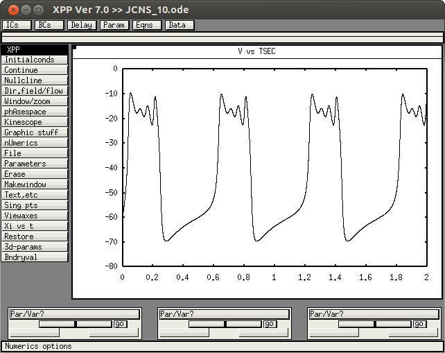

The XPP code associated with the paper: Vo, Bertram, Tabak, Wechselberger "Mixed Mode Oscillations as a Mechanism for Pseudo-Plateau Bursting", Journal of Computational Neuroscience, vol. 28, pp. 443-458, 2010. is available at this website: http://www.math.fsu.edu/~bertram/software/pituitary/ and specifically this link: http://www.math.fsu.edu/~bertram/software/pituitary/JCNS_10.ode These web pages were accessed last May 30th, 2014. Note from the ModelDB administrator: to run with XPP version 7.0 I found I needed to change bell=off to bell=0 on one of the last few lines. The model when run with parameters on line 30 changed to c=6, ga=18 produces a graph like the paper Figure 1b:  The parameter changes for the other figures are given in the documentation at the top of the file.